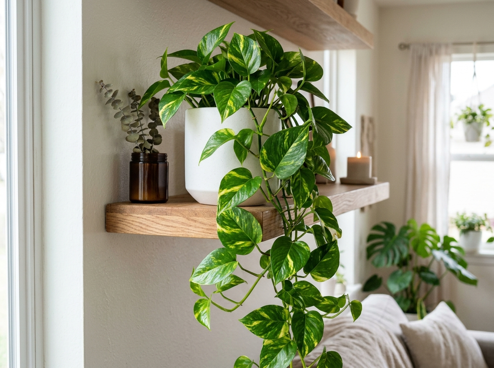
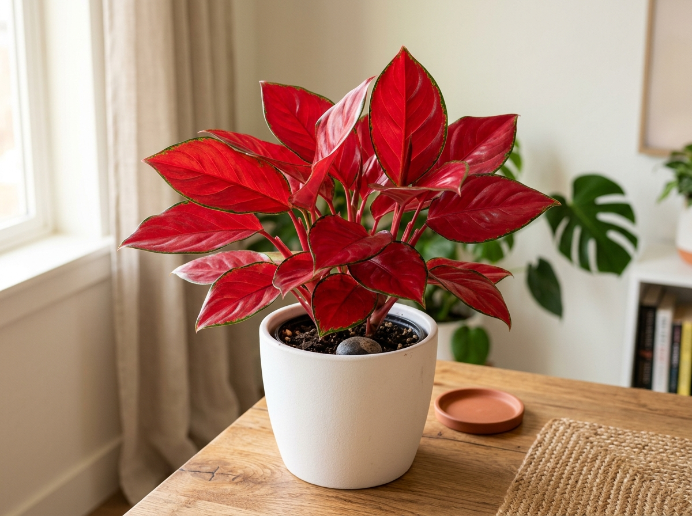

Menghadirkan keasrian dan kesegaran tanaman hias di dalam maupun di luar ruangan merupakan langkah efektif untuk menciptakan suasana hunian dan ruang kerja yang menenangkan, segar, serta estetis. Bintang Jaya Farm hadir sebagai mitra florikultura terpercaya yang menyediakan aneka ragam tanaman hias berkualitas, mulai dari tanaman penyaring udara ruangan hingga spesimen taman lanskap luar ruangan. Artikel panduan ini disusun secara mendalam untuk membantu para pecinta tanaman—baik pemula maupun pengoleksi senior—dalam merawat tanaman hias indoor dan outdoor secara optimal agar tetap tumbuh subur, segar, dan bebas hama.
1. Prinsip Utama Perawatan Tanaman Indoor (Dalam Ruangan)
Tanaman dalam ruangan (indoor) memiliki karakter dan kebutuhan mikroklimat yang berbeda dibandingkan tanaman yang tumbuh di alam bebas. Kunci utama keberhasilan merawat tanaman indoor berfokus pada keseimbangan intensitas cahaya, kelembapan media tanam, dan sirkulasi udara ruangan.
A. Pencahayaan dan Cahaya Terang Tak Langsung (Indirect Light)
Sebagian besar tanaman indoor populer seperti Monstera Deliciosa King, Sansevieria (Lidah Mertua), dan Sirih Gading tumbuh sangat baik pada pencahayaan terang yang tidak terkena sinar matahari secara langsung (bright indirect light). Terkena sengatan sinar matahari langsung yang terik dapat menyebabkan helai daun terbakar (sunburn) atau menguning.
- Penempatan Optimal Letakkan pot tanaman di dekat jendela yang menghadap timur atau utara, atau pasang tirai tipis (vitrase) sebagai filter peneduh jika diletakkan di dekat bukaan jendela barat/selatan.
- Rotasi Posisi Berkala Putar posisi pot sebesar 90 derajat setiap satu atau dua minggu sekali agar seluruh sisi tajuk tanaman mendapatkan paparan cahaya yang merata dan tidak tumbuh condong atau miring ke satu arah.


B. Manajemen Penyiraman & Kelembapan
Penyebab nomor satu kematian tanaman indoor bukanlah kekurangan air, melainkan penyiraman berlebihan (overwatering) yang mengakibatkan kondisi anaerob dan pembusukan akar (root rot). Bintang Jaya Farm merekomendasikan metode pengecekan manual yang sangat akurat:
- Tes Ibu Jari (Finger Test) Masukkan jari tangan Anda hingga kedalaman 2–3 cm ke dalam media tanam. Jika tanah terasa kering dan gembur saat ditarik, lakukan penyiraman. Namun jika masih terasa lembap dan dingin, tunda penyiraman 1–2 hari ke depan.
- Sistem Drainase Pot Sempurna Pastikan pot selalu memiliki lubang drainase yang memadai di bagian bawah. Jangan biarkan air sisa siraman menggenang di piring tatakan pot lebih dari 30 menit.
C. Media Tanam dan Pemupukan Organik
Media tanam indoor harus memiliki porositas yang tinggi agar aerasi oksigen menuju akar berjalan lancar. Formula campuran ideal meliputi sekam bakar, cocopeat, humus daun, dan perlite/pasir malang. Untuk mendukung suplai nutrisi jangka panjang, aplikasikan pupuk slow release atau pupuk organik cair seimbang setiap 1 hingga 2 bulan sekali dengan dosis teratur.
2. Panduan Efektif Perawatan Tanaman Outdoor (Luar Ruangan)
Tanaman luar ruangan (outdoor) terekspos secara langsung oleh fluktuasi cuaca, angin kencang, dan paparan radiasi sinar ultraviolet matahari penuh. Oleh karena itu, strategi perawatan tanaman outdoor memerlukan perhatian khusus pada ketahanan fisik serta cadangan air tanah.
A. Toleransi Sinar Matahari Langsung (Full Sun)
Spesimen tanaman outdoor seperti Bougainvillea, Pucuk Merah, dan berbagai semak berbunga tropis membutuhkan paparan sinar matahari langsung minimal 4 hingga 6 jam setiap harinya untuk mendukung proses fotosintesis aktif serta perangsangan primordia bunga.
B. Rutinitas Penyiraman Intensif
Tingkat evaporasi (penguapan air) pada tanaman outdoor berlangsung sangat cepat, terutama pada musim kemarau. Disiplin waktu penyiraman memegang peranan krusial:
- Pagi Hari (06.00 – 08.00 WIB) Merupakan waktu terbaik untuk menyiram karena tanaman memiliki cadangan air cukup saat menghadapi panas terik siang hari tanpa risiko penguapan sia-sia.
- Sore Hari (16.00 – 17.30 WIB) Opsi penyiraman kedua jika kondisi tanah terasa sangat kering. Hindari menyiram pada terik tengah hari karena perbedaan suhu drastis dapat memicu stres termal pada sistem perakaran.
C. Pemangkasan (Pruning) dan Sanitasi Tanaman
Pemangkasan berkala sangat vital dilakukan pada tanaman outdoor untuk menjaga siluet tanaman tetap rapi, merangsang percabangan baru yang lebih rimbun, serta menyingkirkan bagian ranting mati atau daun yang terserang hama kutu putih dan ulat.
3. Tabel Perbandingan Karakteristik & Perawatan: Indoor vs. Outdoor
Berikut adalah ringkasan matriks panduan komparatif untuk memudahkan Anda menentukan pola pemeliharaan harian:
| Kategori Perawatan | Tanaman Indoor (Dalam Ruangan) | Tanaman Outdoor (Luar Ruangan) |
|---|---|---|
| Intensitas Sinar Matahari | Cahaya terang tidak langsung (Bright Indirect Light) | Sinar matahari langsung penuh (Full / Direct Sun 4–6 jam) |
| Frekuensi Penyiraman | 1 – 2 kali seminggu (Sesuai tes kelembapan media) | 1 – 2 kali sehari (Pagi dan Sore hari) |
| Karakter Media Tanam | Sangat porous, ringan, cepat mengalirkan sisa air | Kaya bahan organik, mampu mengikat kelembapan seimbang |
| Sirkulasi Udara | Memerlukan ventilasi ruangan atau sirkulasi alami | Sirkulasi udara alami dan leluasa sepanjang hari |
| Rekomendasi Spesies (Bintang Jaya Farm) | Monstera Deliciosa, Sansevieria, Sirih Gading, Calathea | Bougenville, Pucuk Merah, Tabebuya, Ketapang Kencana |
4. Solusi & Layanan Florikultura Bintang Jaya Farm
Sebagai pusat nursery dan budidaya tanaman profesional, Bintang Jaya Farm tidak hanya sekadar menjual aneka bibit tanaman berkualitas, tetapi juga mendampingi para pecinta tanaman melalui ragam solusi terpadu:
- Penjualan Retail & Grosir Terlengkap Melayani pembelian eceran untuk kolektor hunian pribadi hingga suplai volume besar untuk kafe, hotel, perkantoran, dan toko tanaman hias rekanan.
- Penataan Lanskap & Taman Minimalis Layanan survei, konsultasi desain, dan instalasi taman tropis, taman kering modern (dry garden), serta vertical garden hemat lahan.
- Souvenir Tanaman Ramah Lingkungan (Eco-Friendly) Paket tanaman mini kaktus, sukulen, dan sirih gading dalam pot terakota estetik untuk hampers, event korporasi, dan cinderamata pernikahan.
- Garansi Kesegaran & Edukasi Pasca-Beli Setiap tanaman dikirimkan bersama kartu panduan perawatan khusus serta fasilitas konsultasi dokter tanaman via WhatsApp tanpa biaya tambahan.
- Standar Pengemasan Aman Seluruh Nusantara Pengemasan khusus menggunakan dakron pelindung daun, rangka kayu proteksi batang, serta media tanam kedap goncangan memastikan tanaman tiba di rumah Anda dalam kondisi segar dan bugar.
Ingin Tanaman di Rumah Anda Tumbuh Rimbun & Sehat?
Konsultasikan masalah daun menguning, pemilihan pupuk, atau pesan paket tanaman siap display bersama staf nursery Bintang Jaya Farm sekarang!
Chat Ahli Tanaman Bintang Jaya Farm